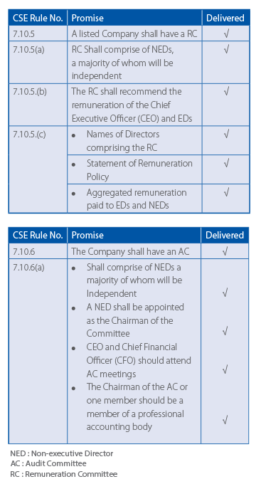
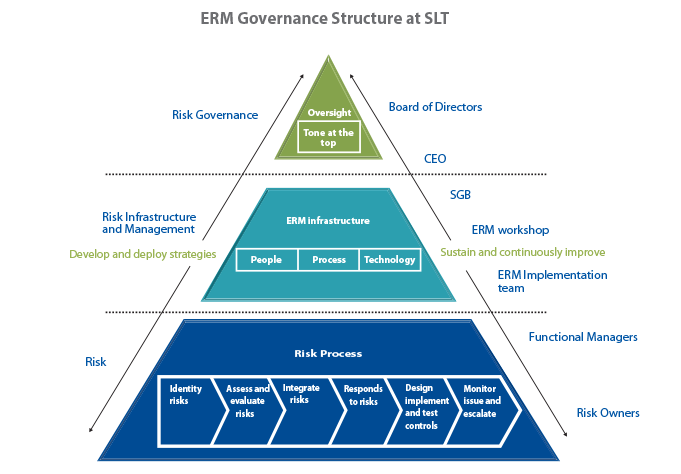

As the telecom service provider to the nation, we know what people want. Over one hundred and fifty years experience in serving Sri Lankans means we understand local requirements, better.
Sri Lanka Telecom and its Board of Directors are committed to the highest standards of governance designed to protect the interests of all stakeholders while promoting integrity, transparency and accountability. SLT ensures that the Company is in compliance with applicable legal and regulatory requirements including meeting the requirements of the listing rules of the Colombo Stock Exchange (CSE), the Companies Act of 2007 and all other applicable laws.
As at the last Annual General Meeting (AGM) of SLT, held on 29th March 2012, the Board consisted of 9 Directors comprising of all non-executive Directors (NED) of which 7 were Independent Directors.
As at 31 December 2012, the Board consists of 9 directors.
New Appointments and Expertise of Board MembersA new Board member was appointed to fill the vacancy created by the resignation of one Board member and the resume of the new Director, including her experience and expertise in relevant functional areas were announced to the Colombo Stock Exchange (CSE) and the public as at 29th June 2012.
Profiles of all the Board of Directors detailing their areas of expertise are included separately in this Annual Report.
Independence of DirectorsThe independence of the Directors has been determined in accordance with CSE Listing Rules and the 7 independent non- executive members have submitted signed confirmations of their independence.
The Board is responsible for the formulation and implementation of the Company's short term, medium term and long term strategies. The Board also ensures that the CEO and the Senior Management team have the skill set, expertise and the knowledge to implement these strategies and that there is an adequate succession plan in place.
The Board also has the ultimate responsibility to ensure that controls are in place for the following:
The Board ensures that all Company decisions at all times are in compliance with laws and regulations of the country and that each decision meets the highest ethical standards. The Board through the Audit Committee ensures that the Company follows accounting standards as set by the Sri Lanka Financial Reporting Standards (SLFRS) and all financial statements are in compliance with financial regulations.
The Board, in addition to keeping all stakeholder interests a priority when considering corporate decisions, also keeps the CSE and the public informed of all such significant decisions. The Board also annually reviews the Company's forecasted budget, actual performance against budgets on a regular basis and discusses and recommends action on other decisions that are of significance to the Company.
Delegation of AuthorityThe Board has delegated the authority to the CEO over the day to day management of the Company and their respective operations by the Articles of Association of the Company. The CEO is responsible for delivering services according to the strategic plan, within the policies and budgets approved by the Board. A team of Senior Management oversees the day-to-day operations of the organisation under the general direction of the CEO.
Delegation to Board MembersThe Board has delegated certain functions and duties to sub committees that comprise of Board Members and others as necessary. Functions and duties of each subcommittee- Audit Committee, Remuneration Committee, Technology Subcommittee and Senior Tender Board are discussed later in the governance section.
All Board members and subcommittee members allocate adequate time to their duties as indicated in the table below.
The Board has periodic discussions with the CEO on the performance of the short, medium and long-term objectives of the Company including financial and non financial indicators.
The Remuneration Committee of SLT comprises of 2 NEDs that are also Independent Directors with the Chairman of the Board in attendance during RC meetings. The RC is responsible for ensuring that the Company's remuneration policies are adequate to attract and retain top talent. The RC is also responsible for recommending the remuneration of the CEO. The aggregated remuneration of Board of Directors and the Senior Management team are disclosed in the notes to the financial statements.
The Audit Committee comprises of 5 NEDs of which 3 are Independent and one member is a fellow of the Institute of Chartered Accountants of England and Wales. The CEO, Chief Internal Auditor (CIA) and the Chief Financial Officer (CFO) attend meetings regularly.
The SLT Board is aware that appraising their own performance periodically would enhance the understanding of individual performance and the Board as a whole. However, though there is no formal appraisal system in place, the Board members ensure that Board responsibilities are satisfactorily discharged.
The Report of the Audit Committee given separately in this Annual Report details the functions and duties of the Committee and the specific objectives met in the current financial year.
The Board through delegation to the Audit Committee ensures that the Company maintains a sound system of internal controls to safeguard investments and Company assets. Therefore, the Audit Committee conducts a review of the effectiveness of the Company's system of internal controls annually.
The TSC comprising of 3 NEDs with technical expertise were formed for the purpose of studying available technology and providing a platform for engaging in intense technical discussions and looking at roadmaps with a long term perspective.
The TSC focuses on: best strategies to increase organisational efficiencies; support the advancement of professional staff capabilities; and develop a flexible delivery system to effectively respond to new technological advances and information.
The responsibilities of the Committee are to review the following four key areas with members of its group;
The Senior Tender Board (STB), comprises of seven members including four NEDs that are independent. Three other members: the CEO, the CFO and the Chief Corporate Officer (CCO) are appointed by the Board to review the Group procurement needs.
The procurement function involves a standard procurement process approved by the Board where, all common procurement processes are consolidated at the Group level for SLT and its subsidiaries in order to increase efficiencies and reduce risk.
In order to increase efficiencies, during the financial year the Senior Tender Board delegated the approval limits of procurement as follows:
Strategic Governance Board comprising the CEO and the Chief Officers of each functional area was created to study the requirements of the cross functional areas and introduce solutions in a more transparent manner whilst bringing efficiencies to each of the new processes, projects or investments through structured planning, governance and controlled project delivery. The introduction of governance boards consisting of cross functional decision making teams have eliminated the common bottlenecks associated with introducing and implementing new programmes and reducing the investment risk. More importantly these governance boards have introduced methodical evaluation of new projects/ programmes and post evaluations of the projects in order to allocate resources only to those projects that meet the strategic objectives of the Company. There are six cross functional governance boards - Transformation and Change Governance Board, Product Governance Board, IT Governance Board, Network Governance Board, Facilities and Services Governance Board, and Enterprise Solutions Governance Board-that operate under the CEO headed by each of the relevant Chief Officers.
Governance Boards- process involvedA Stage-Gate process was introduced consisting
The SLT Board uses the AGM, press releases and releases to the CSE to communicate with its shareholders. SLT ensures that the notice of the AGM along with the Annual Report containing the performance of the Company are delivered to the shareholders at least 15 working days prior to the scheduled meeting. The Chairman of the Board ensures that the Chairs of each subcommittee especially that of the Audit Committee and the Remuneration Committee are present at the AGM to provide necessary information if requested by shareholders.
The Company Secretary ensures that Board procedures are followed and that applicable rules and regulations are complied with. The Company Secretary also liaises with the CSE on all of the Company's communications. The Company Secretary also is responsible for announcing the AGM and any EGMs to the Shareholders and for accurate recording of proxy voting. Any decisions on the removal of the Company Secretary lie within the Board as a whole.
The Board of Directors, as required by the Company's Act, has been disclosing to shareholders all proposed corporate transactions detailing all facts associated with such transactions that are of material value to the SLT. There were no major transactions entered into by SLT for the year 2012.
This policy introduced in 2012, addresses the commitment of SLT to uphold the integrity and ethical behaviour by helping to foster and maintain an environment where an employee can act appropriately without fear of retaliation. To maintain the standards of business conduct and ethics, the Company encourages its employees who have concerns about suspected serious misconduct or any breach or suspected breach of law or regulation that may adversely affect the Company, to come forward and express these concerns without fear of punishment or unfair treatment.
Objectives of the policyA committee consisting of seven members was formed to handle any cases referred. The quorum for the meeting is four members including Chairman, CEO, Chief Financial Officer and Chief Human Resources Officer. The Chief Officer who represents the subject has no voting power if he is represented in the Committee. The Secretary of the Whistleblowing Committee is to submit reports endorsed by its Chairman at every Audit Committee meeting.
As a giant ICT provider in the country, SLT and its Board are constantly exploring ways to enhance its transparency in all decisions made. Thus, the staff, customers and all other stakeholders are encouraged to provide feedback in order for the management to have an understanding of the areas that need to be strengthened. The processes already in place captures the majority of concerns and complaints made by stakeholders and the Company is constantly evaluating these comments to enhance the governance process at SLT.
In the present context of a dynamic and volatile business environment, it is vital for an organisation to be adequately prepared to face the seen and the unforeseen challenges. SLT, like many other business enterprises have understood the importance of being prepared to capitalise on the opportunities in order to create value for the organisation and its customers, while accepting or mitigating the threats to minimise losses. In recent years, SLT has experienced challenges posed by the booming telecom industry with heightened competition and the resultant demands of customers. Therefore, under the direction of SLT's Board of Directors, a formal risk management process was introduced towards the latter part of 2010 and established the Enterprise Risk Management (ERM) framework in 2011.
The ERM process introduced the development of a company- wide risk register and a risk escalation arrangement via various risk forums held throughout the organisation. The ERM process which is aligned to meet the ISO 31000 standards and also include components of COSO (Committee of Sponsoring Organisations of the Treadway Commission) recommendations will help develop a risk intelligent culture within the organisation bringing value to SLT, our customers and other stakeholders.
The Risk Management Process at SLT encourages a bottom-up approach whereby all staff are expected to participate in the risk identification process. The identified risks are then recorded in the risk registers which are maintained at Group level. The identified risks are then formally assessed with an assigned magnitude and escalated to the higher authorities of the Company for treatment.
The escalation process based on the magnitude of the risk can be elevated up to the level of the Board of Directors who is the ultimate governing body of ERM. The Board of Directors have recognised risk as a priority in the organisation, and assists with the efforts of the senior management team and the respective staff in enabling and creating a risk intelligent culture within the organisation. The Board of Directors has also delegated authority to the Audit Committee to ensure the level of effectiveness of the ERM process during respective implementation phases of the ERM programme.
During the financial year under review, the Company carried out comprehensive programmes to create awareness on risk management throughout the organisation, covering the senior management team and key staff members.
These awareness programmes mainly focused on;
Successful completion of training of all senior executives and the feedback received has enabled SLT to incorporate new project concepts into its 2013 annual business plan. These new project concepts are to enable SLT to become a SMART (Service, Management, Application, Relationship and Technology) player in the industry.
The financial year also saw the successful creation of functional teams under each operational group of the Company that will assist in implementing the risk management process. These teams have commenced their work and will progressively identify, analyse, evaluate, treat and monitor risks of the company.
Development of components of the ERM process such as creation of risk registers, designing of the risk assessment process, defining of Key Risk Indicators (KRIs), identification of risk appetite levels etc. are in progress. Risk appetite - the amount of risk exposure or potential adverse impact from an event that the entity's Board and senior management are willing to accept are defined by the Board of Directors after careful analysis and deliberations with the Risk Management committees.
License granted to Sri Lanka Telecom in 1991 was renewed during the financial year with new conditions of converting the existing network to a National Backbone Network (NBN). As per the license, NBN operations have to commence after three (03) months from the date of issuance of the license and the network is to be developed with a roll out target to be achieved in five years. The target is such that in five years, NBN should be capable of providing services from 329 access points covering all Divisional Secretariats in the country.
Noncompliance of aforesaid target will be subject to a penalty charge of Rs.500,000 * (X-Y) where X is number of electorates to be covered and Y is actual number of electorates covered in each year. A performance bond worth of US$ 2,000,000 has also been imposed as a performance security of NBN. With the implementation of NBN, the SLT backbone services presently being provided under the business of SLT's wholesale division will have to be operated on regulated terms governed by the SLT license conditions.
Mitigating factor: SLT 's preparedness to meet these conditions of NBN license so as to not have a penalty imposed in the future.
Regulation of TariffsWith the introduction of NBN, the prices of wholesale products provided may need to be revised as NBN services are regulated on the basis of cost of the service. In this context, the existing backbone charges will need to be revised to reduce the existing rates and approval for the revised charges will be obtained from TRCSL. Since the demand for the NBN is not yet foreseen and non-committed, the price revision of existing wholesale products might have a negative impact on the revenues of the wholesale products.
In the retail market, heavy competition especially in the international voice and broadband market is very challenging to SLT. The implications are such that sustainability of the revenues has become an issue which has ultimately resulted in eroding of margins of the same services.
Mitigating factor: SLT is in regular dialogue with the TRCSL to have pricing policies implemented in such areas.
Other policies of TRCThe Government has notified that new policies are yet to be introduced to the telecom sector. Though guidelines for broadband operations have already been issued to all operators for immediate implementation, a new Broadband Policy is to be issued in the near future. Furthermore, the Next Generation Network (NGN) Framework and review of the Telecommunication Act 25 of 1991 with new amendments are also to be issued by TRC.
It must be noted that it is impractical to forecast the outcome of any particular case or the amount of any possible verdict in respect of ongoing litigation. Nevertheless, the defences taken in those cases have the judicious features of both the law and the facts. SLT was a party to several court and out-of-court proceedings with other parties and detailed below is the summary of the material litigation during 2012.
Global Electroteks Limited has initiated legal action under High Court Case No. 20/2006 claiming damages of USD 12 million from SLT PLC for alleged unlawful disconnection of interconnection services.
Just In Time Holding (Pvt) Ltd (JIT) filed a case against SLT in ICLP Arbitration Centre. JIT is claiming USD 4,738,846.57, as payments due to them from SLT under the contract. The award was delivered on 30.03.2013 in favour of JIT, with damages, costs and legal interests. SLT has already filed an appeal against the Arbitral Award which is presently proceeding and SLT has received legal advise that it has sufficient legal grounds to challenge the arbitral award including damages, costs and legal interest under the award.
Legal action filed by SLT against Colombo Municipal Council, against the arbitrary increase of assessment value for Headquarters premises from Rs.84 million to Rs.96 million. The quarterly assessment tax in 2006 was increased from Rs.7,350,000/- to Rs.8,452,5000/-.
Legal action was initiated by H/S Communication Ltd., against SLT & SLT Visioncom (Pvt) Ltd., seeking a stay order against airing of certain channels by SLT Visioncom (Pvt) Ltd., and to recover arrears of US $ 486,000/-. SLT made representations and no stay order was granted, and HS Communication Ltd withdrew their application for the stay order. The main claim against SLT and SLT Visioncom (Pvt) Ltd. is proceeding.
Directories Lanka (Pvt) Limited claimed damages of Rs.250 million for alleged unfair competition with regard to artwork on the cover page of Directory of SLT. The order was delivered in favour of SLT and Directories Lanka has appealed against this order.
An inquiry was initiated by the Customs Department regarding the importation of CDMA equipment which was detained and subsequently released on a bank guarantee of Rs.122 million and presently this matter is being negotiated for a settlement.
Liquidity Risk is defined as a situation where the company finds it is unable to fulfill due payment obligations in a timely manner. This is a result of the company not having sufficient financial resources to meet the obligations thus requiring financing on unfavourable terms. This risk mainly arises from mismatches in the timing or maturity of cash flows.
A Company is vulnerable to Liquidity Risk if its credit rating falls. It experiences sudden unexpected cash outflows or some other event that causes counterparties to avoid trading with or lending to the company.
The liquidity of a company will depend on several factors such as:
In order to manage this risk, SLT employs regular financial planning and monitoring systems to ensure that sufficient cash flows are available to meet all financial commitments as they fall due and ensure adequate credit lines are in place with Banks for emergency financing. Further, the investment of any excess funds is made in highly liquid instruments such as Government Securities, Repos and short term Fixed Deposits.
Credit RiskThe risk of the possibility of a loss being incurred as a result of inability of a debtor or a counterparty honouring its contractual obligations is known as Credit Risk. This can arise as a result of diminution of credit quality of debtors and other counterparties. This risk may not be limited to Statement of financial position items, but can also arise as a result of Off-Statement of financial position items such as Financial Guarantees.
In assessing Credit Risk from a single customer/counterparty, a company has to consider three main issues.
In order to manage this risk, SLT ensures that comprehensive systems and procedures are in place to monitor and evaluate debtors/counterparties and recoveries. Further, pre-paid sales are used as a means of mitigating Credit Risk.
In relation to investments, proper screening is done considering the Credit Ratings of such investing institutions/ Banks.
Interest Rate RiskThe impact on the Company as a result of changes in the market interest rate is known as Interest Rate Risk. This would be inevitable for a company having interest sensitive assets and liabilities and would arise mainly due to the following.
SLT's debt and investments are maintained in a mix of fixed and variable interest rate instruments with caps and floors where possible and periodic maturity gap analysis is carried out to take timely action and to mitigate possible adverse impact due to volatility of the interest rates.
Exchange Rate RiskForeign Exchange Risk, which is also known as Currency Risk is a major source of market risk and is unavoidable in any entity where re-pricing of Foreign Currency Assets and Liabilities are not identically matched. This risk represents the current or prospective risk to earnings and capital arising from adverse movements in currency exchange rates. The company is exposed to Foreign Exchange Risk whenever it transacts in any other currency other than SLT's base currency, Sri Lankan Rupees (LKR). This can be due to both transaction and translation risks.
The fluctuations of the Foreign Currency Rates in the global market can have adverse impacts on the company's foreign currency denominated assets and liabilities. The company manages its foreign exchange exposure by maintaining foreign currency accounts for related inflows and using same for paying off some of its liabilities in foreign currency. This serves as an effective hedging mechanism against foreign currency exposure. As a further measure, only optimum amounts are maintained in these foreign currency accounts and any excesses are converted to SLT's base currency (LKR) after carefully studying the future forecasts of the currency movements.
In the context of changing telecom business models, human capital is exceedingly important. Employee skill development, employee retention, aging workforce and escalation of employee cost are the most challenging areas in the present industry scenario. SLT has been successful in moulding existing employees according to future requirements, while maintaining one of the lowest employee turnover ratios in the industry. SLT faces the challenge of managing more than 6,000 permanent employees. Hence, maintaining healthy relations among unions and the management and maintaining industrial harmony is imperative for the well being of the Company. SLT was able to resolve industrial conflicts during the year 2012, providing long term solutions through Memorandum of Understanding (MOU) with the employee unions, management and shareholders and also through series of awareness sessions.